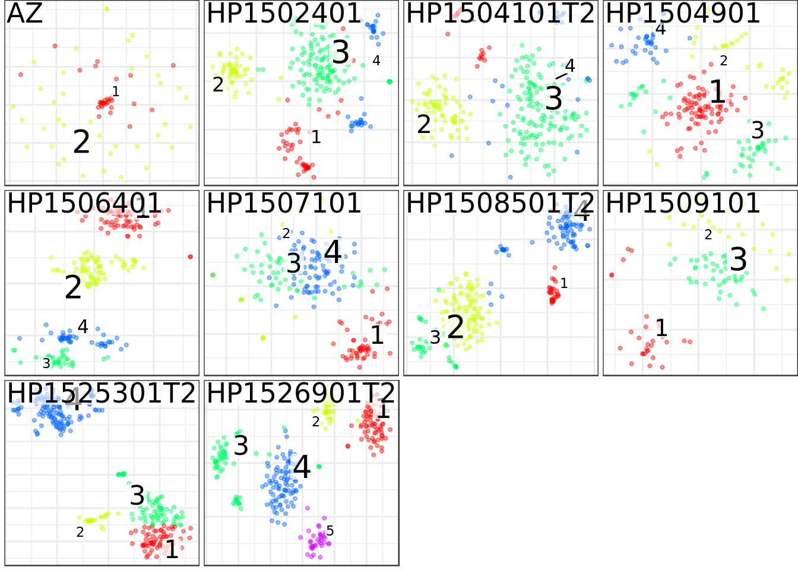
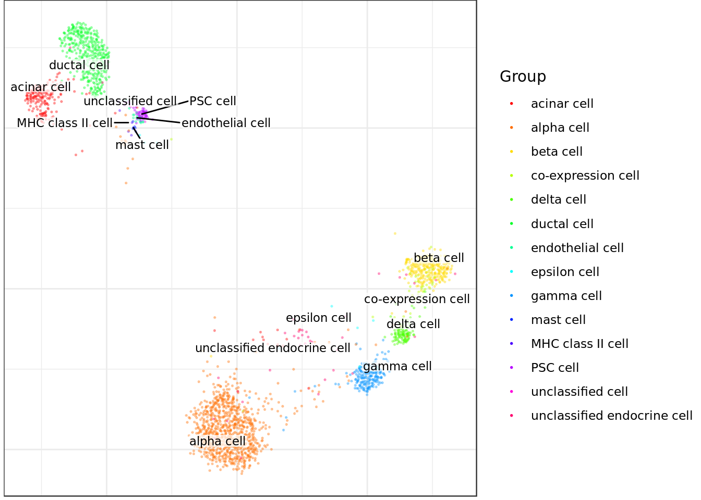
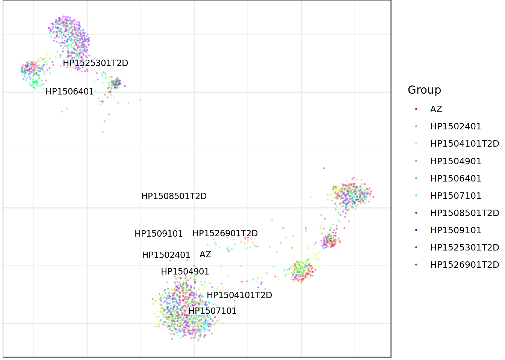
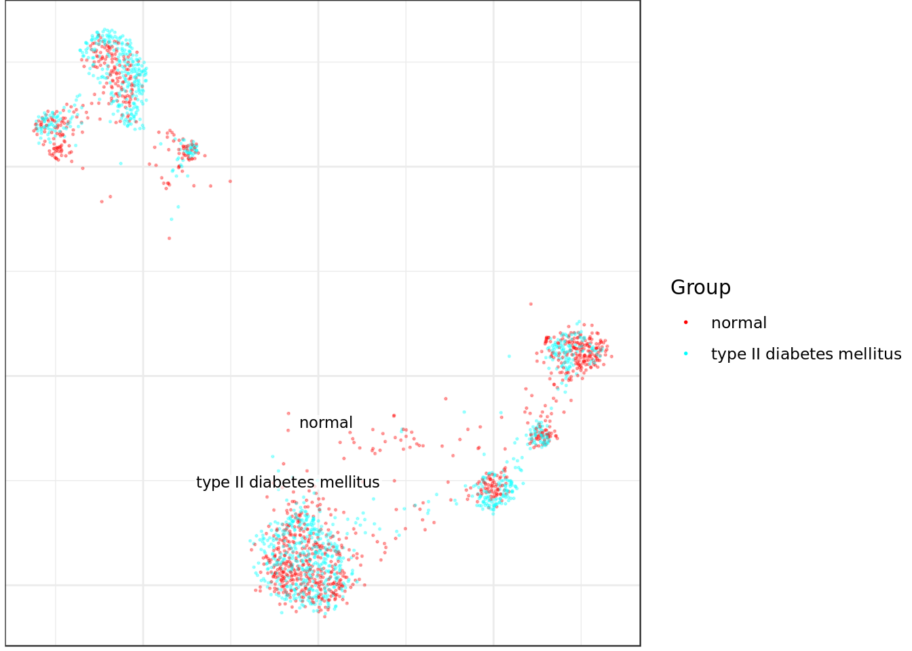
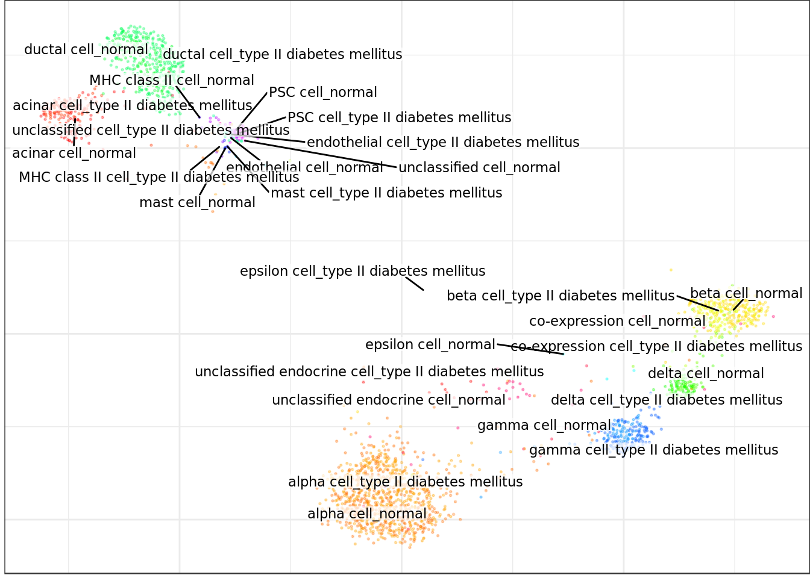
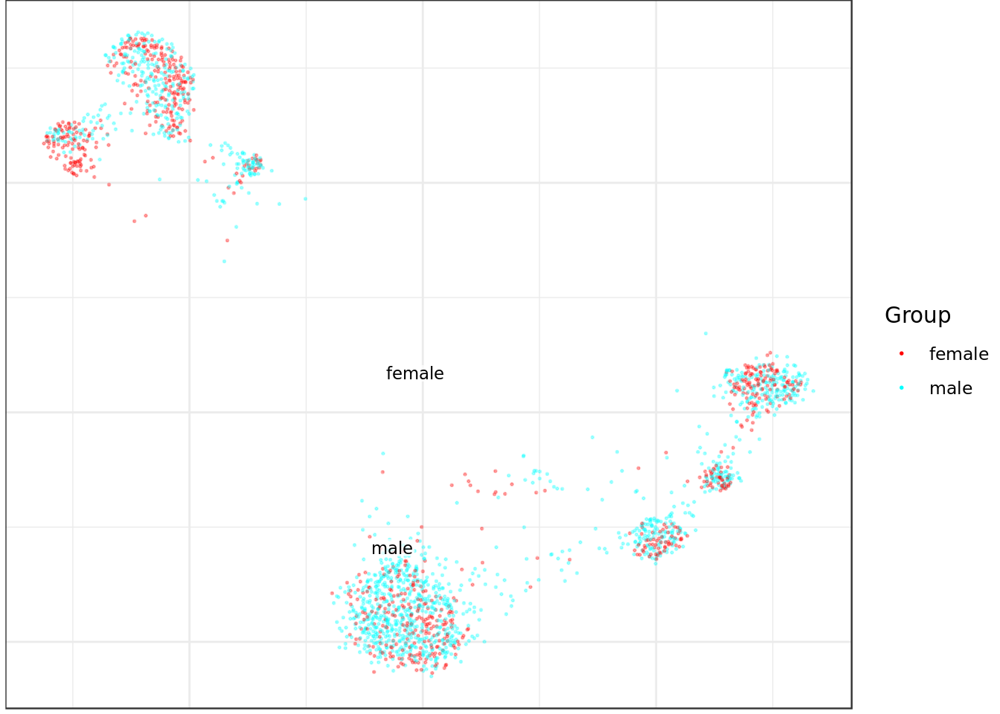
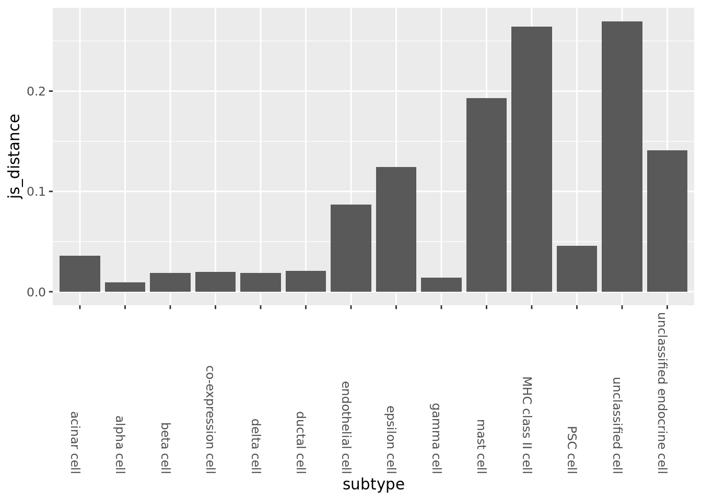
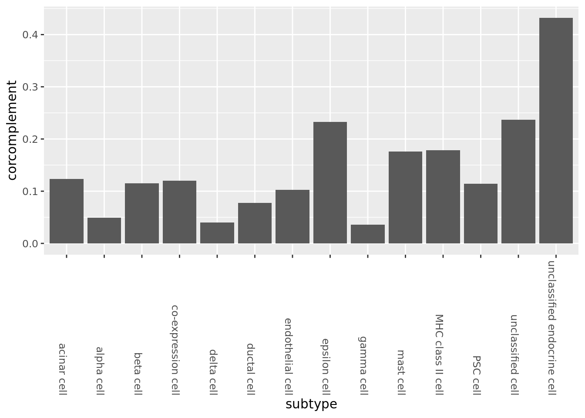
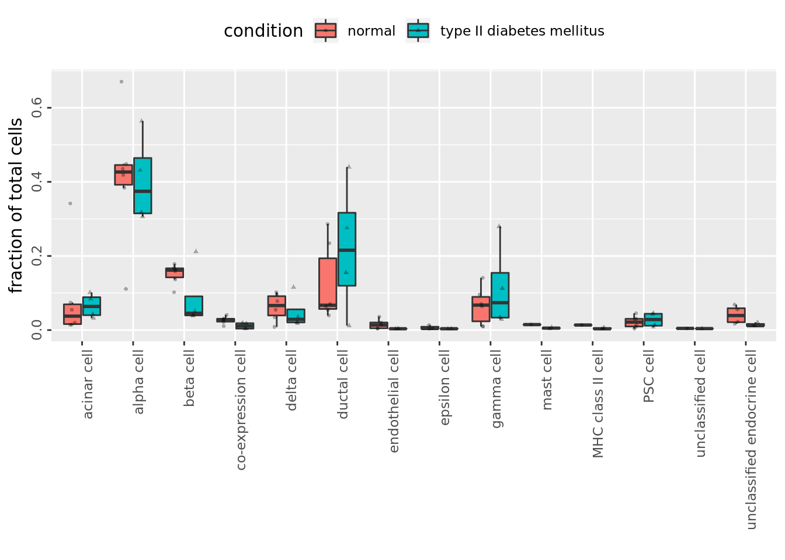
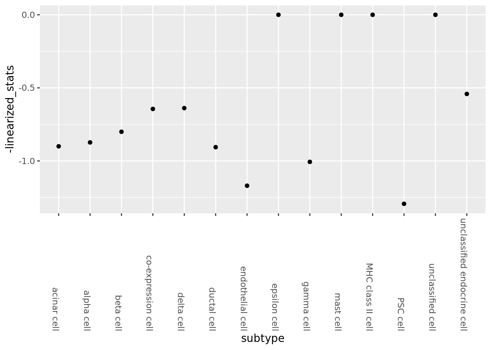

Last updated: 2019-06-17
Checks: 6 0
Knit directory: SecretUtils/
This reproducible R Markdown analysis was created with workflowr (version 1.3.0). The Checks tab describes the reproducibility checks that were applied when the results were created. The Past versions tab lists the development history.
Great! Since the R Markdown file has been committed to the Git repository, you know the exact version of the code that produced these results.
Great job! The global environment was empty. Objects defined in the global environment can affect the analysis in your R Markdown file in unknown ways. For reproduciblity it’s best to always run the code in an empty environment.
The command set.seed(20190415) was run prior to running the code in the R Markdown file. Setting a seed ensures that any results that rely on randomness, e.g. subsampling or permutations, are reproducible.
Great job! Recording the operating system, R version, and package versions is critical for reproducibility.
Nice! There were no cached chunks for this analysis, so you can be confident that you successfully produced the results during this run.
Great! You are using Git for version control. Tracking code development and connecting the code version to the results is critical for reproducibility. The version displayed above was the version of the Git repository at the time these results were generated.
Note that you need to be careful to ensure that all relevant files for the analysis have been committed to Git prior to generating the results (you can use wflow_publish or wflow_git_commit). workflowr only checks the R Markdown file, but you know if there are other scripts or data files that it depends on. Below is the status of the Git repository when the results were generated:
Ignored files:
Ignored: .Rhistory
Ignored: .Rproj.user/
Untracked files:
Untracked: .Rbuildignore
Untracked: R/hello.R
Untracked: analysis/make_scanpy_viktor.R
Untracked: analysis/mouse_alzheimer_annotating.Rmd
Untracked: analysis/mouse_alzheimer_preproc.Rmd
Untracked: analysis/paga.Rmd
Untracked: analysis/paga3.Rmd
Untracked: analysis/subtype_distances.Rmd
Untracked: analysis/subtype_distances2.Rmd
Untracked: analysis/subtype_distances4.Rmd
Untracked: analysis/subtype_distances_redux.Rmd
Untracked: analysis/subtype_distances_revenge.Rmd
Untracked: analysis/test_output.Rmd
Untracked: analysis/transmute_peters_code.Rmd
Untracked: analysis/ulcerative_collitis_preproc.Rmd
Untracked: docs/figure/paga.Rmd/
Untracked: docs/figure/pancreas_indrop.Rmd/
Untracked: man/
Unstaged changes:
Modified: DESCRIPTION
Modified: R/asdf.R
Modified: R/peter_code_utils.R
Modified: analysis/correlation_stuff.Rmd
Modified: analysis/jensen_shannon_stuff.Rmd
Modified: analysis/misc_metrics.Rmd
Modified: analysis/mouse_alzheimer_analysis.Rmd
Modified: analysis/paga2.Rmd
Modified: analysis/subtype_distances3.Rmd
Modified: analysis/transmute_code_eps.Rmd
Modified: analysis/transmute_code_eps_2.Rmd
Modified: analysis/visualizations.Rmd
Note that any generated files, e.g. HTML, png, CSS, etc., are not included in this status report because it is ok for generated content to have uncommitted changes.
These are the previous versions of the R Markdown and HTML files. If you’ve configured a remote Git repository (see ?wflow_git_remote), click on the hyperlinks in the table below to view them.
| File | Version | Author | Date | Message |
|---|---|---|---|---|
| Rmd | 0f9a388 | githubz0r | 2019-06-17 | pancreas analysis |
This is an R Markdown Notebook. When you execute code within the notebook, the results appear beneath the code.
Try executing this chunk by clicking the Run button within the chunk or by placing your cursor inside it and pressing Cmd+Shift+Enter.
load teh data and packs
library(conos)Loading required package: MatrixLoading required package: igraph
Attaching package: 'igraph'The following objects are masked from 'package:stats':
decompose, spectrumThe following object is masked from 'package:base':
unionrequire(pagoda2)Loading required package: pagoda2devtools::load_all('/home/larsc/SecretUtils')Loading SecretUtilsLoading required package: magrittrLoading required package: reshape2library(pheatmap)
library(irlba)
library(tidyverse)── Attaching packages ────────────────────────────────────────────────────────────────────────────────────────────── tidyverse 1.2.1 ──✔ ggplot2 3.1.1 ✔ purrr 0.3.2
✔ tibble 2.1.2 ✔ dplyr 0.8.1
✔ tidyr 0.8.3 ✔ stringr 1.4.0
✔ readr 1.3.1 ✔ forcats 0.4.0── Conflicts ───────────────────────────────────────────────────────────────────────────────────────────────── tidyverse_conflicts() ──
✖ dplyr::as_data_frame() masks tibble::as_data_frame(), igraph::as_data_frame()
✖ purrr::compose() masks igraph::compose()
✖ tidyr::crossing() masks igraph::crossing()
✖ tidyr::expand() masks Matrix::expand()
✖ tidyr::extract() masks magrittr::extract()
✖ dplyr::filter() masks stats::filter()
✖ dplyr::groups() masks igraph::groups()
✖ dplyr::lag() masks stats::lag()
✖ purrr::set_names() masks magrittr::set_names()
✖ purrr::simplify() masks igraph::simplify()panel <- readRDS(file.path('/home/larsc/pancreas_smart_seq_cms.rds'))panel.preprocessed <- lapply(panel, basicP2proc, n.cores=25, min.cells.per.gene=0, n.odgenes=2e3, get.largevis=FALSE, make.geneknn=FALSE)73 cells, 25526 genes; normalizing ... using plain model winsorizing ... log scale ... done.
calculating variance fit ... using gam 12 overdispersed genes ... 12 persisting ... done.
running PCA using 2000 OD genes ..Warning in irlba(x, nv = nPcs, nu = 0, center = cm, right_only = FALSE, :
You're computing too large a percentage of total singular values, use a
standard svd instead... done
perplexity is too large, reducing to 24
running tSNE using 25 cores:
269 cells, 25526 genes; normalizing ... using plain model winsorizing ... log scale ... done.
calculating variance fit ... using gam 277 overdispersed genes ... 277 persisting ... done.
running PCA using 2000 OD genes .... done
running tSNE using 25 cores:
250 cells, 25526 genes; normalizing ... using plain model winsorizing ... log scale ... done.
calculating variance fit ... using gam 314 overdispersed genes ... 314 persisting ... done.
running PCA using 2000 OD genes .... done
running tSNE using 25 cores:
220 cells, 25526 genes; normalizing ... using plain model winsorizing ... log scale ... done.
calculating variance fit ... using gam 109 overdispersed genes ... 109 persisting ... done.
running PCA using 2000 OD genes .... done
perplexity is too large, reducing to 73
running tSNE using 25 cores:
234 cells, 25526 genes; normalizing ... using plain model winsorizing ... log scale ... done.
calculating variance fit ... using gam 1347 overdispersed genes ... 1347 persisting ... done.
running PCA using 2000 OD genes .... done
perplexity is too large, reducing to 77
running tSNE using 25 cores:
203 cells, 25526 genes; normalizing ... using plain model winsorizing ... log scale ... done.
calculating variance fit ... using gam 614 overdispersed genes ... 614 persisting ... done.
running PCA using 2000 OD genes .... done
perplexity is too large, reducing to 67
running tSNE using 25 cores:
276 cells, 25526 genes; normalizing ... using plain model winsorizing ... log scale ... done.
calculating variance fit ... using gam 1017 overdispersed genes ... 1017 persisting ... done.
running PCA using 2000 OD genes .... done
running tSNE using 25 cores:
98 cells, 25526 genes; normalizing ... using plain model winsorizing ... log scale ... done.
calculating variance fit ... using gam 394 overdispersed genes ... 394 persisting ... done.
running PCA using 2000 OD genes ..Warning in irlba(x, nv = nPcs, nu = 0, center = cm, right_only = FALSE, :
You're computing too large a percentage of total singular values, use a
standard svd instead... done
perplexity is too large, reducing to 32
running tSNE using 25 cores:
284 cells, 25526 genes; normalizing ... using plain model winsorizing ... log scale ... done.
calculating variance fit ... using gam 1285 overdispersed genes ... 1285 persisting ... done.
running PCA using 2000 OD genes .... done
running tSNE using 25 cores:
302 cells, 25526 genes; normalizing ... using plain model winsorizing ... log scale ... done.
calculating variance fit ... using gam 1149 overdispersed genes ... 1149 persisting ... done.
running PCA using 2000 OD genes .... done
running tSNE using 25 cores:what is going on
str(panel.preprocessed,1)List of 10
$ AZ :Reference class 'Pagoda2' [package "pagoda2"] with 16 fields
..and 34 methods, of which 20 are possibly relevant
$ HP1502401 :Reference class 'Pagoda2' [package "pagoda2"] with 16 fields
..and 34 methods, of which 20 are possibly relevant
$ HP1504101T2D:Reference class 'Pagoda2' [package "pagoda2"] with 16 fields
..and 34 methods, of which 20 are possibly relevant
$ HP1504901 :Reference class 'Pagoda2' [package "pagoda2"] with 16 fields
..and 34 methods, of which 20 are possibly relevant
$ HP1506401 :Reference class 'Pagoda2' [package "pagoda2"] with 16 fields
..and 34 methods, of which 20 are possibly relevant
$ HP1507101 :Reference class 'Pagoda2' [package "pagoda2"] with 16 fields
..and 34 methods, of which 20 are possibly relevant
$ HP1508501T2D:Reference class 'Pagoda2' [package "pagoda2"] with 16 fields
..and 34 methods, of which 20 are possibly relevant
$ HP1509101 :Reference class 'Pagoda2' [package "pagoda2"] with 16 fields
..and 34 methods, of which 20 are possibly relevant
$ HP1525301T2D:Reference class 'Pagoda2' [package "pagoda2"] with 16 fields
..and 34 methods, of which 20 are possibly relevant
$ HP1526901T2D:Reference class 'Pagoda2' [package "pagoda2"] with 16 fields
..and 34 methods, of which 20 are possibly relevantmake conos object
con <- Conos$new(panel.preprocessed, n.cores=1)str(con$samples,1)List of 10
$ AZ :Reference class 'Pagoda2' [package "pagoda2"] with 16 fields
..and 34 methods, of which 20 are possibly relevant
$ HP1502401 :Reference class 'Pagoda2' [package "pagoda2"] with 16 fields
..and 34 methods, of which 20 are possibly relevant
$ HP1504101T2D:Reference class 'Pagoda2' [package "pagoda2"] with 16 fields
..and 34 methods, of which 20 are possibly relevant
$ HP1504901 :Reference class 'Pagoda2' [package "pagoda2"] with 16 fields
..and 34 methods, of which 20 are possibly relevant
$ HP1506401 :Reference class 'Pagoda2' [package "pagoda2"] with 16 fields
..and 34 methods, of which 20 are possibly relevant
$ HP1507101 :Reference class 'Pagoda2' [package "pagoda2"] with 16 fields
..and 34 methods, of which 20 are possibly relevant
$ HP1508501T2D:Reference class 'Pagoda2' [package "pagoda2"] with 16 fields
..and 34 methods, of which 20 are possibly relevant
$ HP1509101 :Reference class 'Pagoda2' [package "pagoda2"] with 16 fields
..and 34 methods, of which 20 are possibly relevant
$ HP1525301T2D:Reference class 'Pagoda2' [package "pagoda2"] with 16 fields
..and 34 methods, of which 20 are possibly relevant
$ HP1526901T2D:Reference class 'Pagoda2' [package "pagoda2"] with 16 fields
..and 34 methods, of which 20 are possibly relevantcon$plotPanel(clustering="multilevel", use.local.clusters=T, title.size=6)
con$buildGraph(k=15, k.self=10, k.self.weight=0.1, space='PCA', ncomps=50, n.odgenes=2000, matching.method='mNN', metric='angular', verbose=TRUE)found 0 out of 45 cached PCA space pairs ... running 45 additional PCA space pairs Warning in irlba::irlba(x, nv = ncomps, nu = 0, center = cm, right_only =
F, : You're computing too large a percentage of total singular values, use
a standard svd instead..Warning in irlba::irlba(x, nv = ncomps, nu = 0, center = cm, right_only =
F, : You're computing too large a percentage of total singular values, use
a standard svd instead..Warning in irlba::irlba(x, nv = ncomps, nu = 0, center = cm, right_only =
F, : You're computing too large a percentage of total singular values, use
a standard svd instead..Warning in irlba::irlba(x, nv = ncomps, nu = 0, center = cm, right_only =
F, : You're computing too large a percentage of total singular values, use
a standard svd instead..Warning in irlba::irlba(x, nv = ncomps, nu = 0, center = cm, right_only =
F, : You're computing too large a percentage of total singular values, use
a standard svd instead..Warning in irlba::irlba(x, nv = ncomps, nu = 0, center = cm, right_only =
F, : You're computing too large a percentage of total singular values, use
a standard svd instead..Warning in irlba::irlba(x, nv = ncomps, nu = 0, center = cm, right_only =
F, : You're computing too large a percentage of total singular values, use
a standard svd instead.
Warning in irlba::irlba(x, nv = ncomps, nu = 0, center = cm, right_only =
F, : You're computing too large a percentage of total singular values, use
a standard svd instead..Warning in irlba::irlba(x, nv = ncomps, nu = 0, center = cm, right_only =
F, : You're computing too large a percentage of total singular values, use
a standard svd instead..Warning in irlba::irlba(x, nv = ncomps, nu = 0, center = cm, right_only =
F, : You're computing too large a percentage of total singular values, use
a standard svd instead.......Warning in irlba::irlba(x, nv = ncomps, nu = 0, center = cm, right_only =
F, : You're computing too large a percentage of total singular values, use
a standard svd instead........Warning in irlba::irlba(x, nv = ncomps, nu = 0, center = cm, right_only =
F, : You're computing too large a percentage of total singular values, use
a standard svd instead.......Warning in irlba::irlba(x, nv = ncomps, nu = 0, center = cm, right_only =
F, : You're computing too large a percentage of total singular values, use
a standard svd instead......Warning in irlba::irlba(x, nv = ncomps, nu = 0, center = cm, right_only =
F, : You're computing too large a percentage of total singular values, use
a standard svd instead.....Warning in irlba::irlba(x, nv = ncomps, nu = 0, center = cm, right_only =
F, : You're computing too large a percentage of total singular values, use
a standard svd instead....Warning in irlba::irlba(x, nv = ncomps, nu = 0, center = cm, right_only =
F, : You're computing too large a percentage of total singular values, use
a standard svd instead....Warning in irlba::irlba(x, nv = ncomps, nu = 0, center = cm, right_only =
F, : You're computing too large a percentage of total singular values, use
a standard svd instead..Warning in irlba::irlba(x, nv = ncomps, nu = 0, center = cm, right_only =
F, : You're computing too large a percentage of total singular values, use
a standard svd instead... done
inter-sample links using mNN ............................................. done
local pairs local pairs .......... done
building graph ..doneload annotation
annot <- readRDS(file.path('/home/larsc/pancreas_smart_seq_design_info.rds'))rbind panel
rbound_pancreas <- RbindPanel(con)Plotting with annotation just because
common_cells <- annot$CellId %in%rownames(rbound_pancreas)
annot_filt <- annot[common_cells,]
annot_filt <- as.data.frame(annot_filt[,c(1,6,8, 9, 10)])
annot_filt$subtype_condition <- paste0(annot_filt$`Characteristics[cell type]`, '_', annot_filt$`Characteristics[disease]`)cell_annot <- setNames(annot_filt$`Characteristics[cell type]`, annot_filt$CellId)
sample_annot <- setNames(annot_filt$Individual, annot_filt$CellId )
condition_annot <- setNames(annot_filt$`Characteristics[disease]`, annot_filt$CellId)
sub_cond_annot <- setNames(annot_filt$subtype_condition, annot_filt$CellId)
sex_annot <- setNames(annot_filt$`Characteristics[sex]`, annot_filt$CellId)con$plotGraph(groups=cell_annot, show.legend=T, font.size=3, size=0.3, alpha=0.3)Estimating embeddings.
con$plotGraph(groups=sample_annot, show.legend=T, font.size=3, size=0.3, alpha=0.3)
con$plotGraph(groups=condition_annot, show.legend=T, font.size=3, size=0.3, alpha=0.3)
con$plotGraph(groups=sub_cond_annot, font.size=3, size=0.3, alpha=0.3)
con$plotGraph(groups=sex_annot, show.legend=T, font.size=3, size=0.3, alpha=0.3)
Initiate some variables
od_genes = conos:::getOdGenesUniformly(con$samples, 3000)
state_split <- split(annot_filt, annot_filt$`Characteristics[disease]`, drop=TRUE)
subtype_split <- state_split %>% lapply(function(x){split(x, x$`Characteristics[cell type]`, drop=TRUE)})Jensen Shannon, overall
normal_probs <- subtype_split$normal %>% GetSampProbs(rbound_pancreas, od_genes, cellid.col = 1, pseudo.count=10^(-8))
diabetes_probs <- subtype_split$`type II diabetes mellitus` %>% GetSampProbs(rbound_pancreas, od_genes, cellid.col = 1, pseudo.count=10^(-8))
all_dists <- Map(JensenShannon, normal_probs, diabetes_probs) %>% as_tibble
all_dists_gathered <- gather(all_dists, key=subtype, value=js_distance)
ggplot(all_dists_gathered, aes(y=js_distance, x=subtype)) +geom_bar(stat='identity') +
theme(axis.text.x = element_text(angle = -90, hjust = 1))
PCA for correlation
pca_cm <- prcomp_irlba(rbound_pancreas[, od_genes],n=100)
pca_cmat <- pca_cm$x
rownames(pca_cmat) <- rownames(rbound_pancreas)
pca_genes <- colnames(pca_cmat)normal_vecs <- subtype_split$normal %>% GetSubMatrices(pca_cmat, pca_genes, cellid.col = 1, avg=T)
diabetes_vecs <- subtype_split$`type II diabetes mellitus` %>% GetSubMatrices(pca_cmat, pca_genes, cellid.col = 1, avg=T)
all_dists <- Map(function(x,y){1-cor(x,y)}, normal_vecs, diabetes_vecs) %>% as_tibble
all_dists_gathered <- gather(all_dists, key=subtype, value=corcomplement)
ggplot(all_dists_gathered, aes(y=corcomplement, x=subtype)) +geom_bar(stat='identity') +
theme(axis.text.x = element_text(angle = -90, hjust = 1)) Fractional plot
FractionalPlot(annot_filt$Individual, annot_filt$`Characteristics[cell type]`, annot_filt$`Characteristics[disease]`)
PAGA
con_graph <- igraph::as_adjacency_matrix(con$graph, attr="weight")
con_distances <- igraph::as_adjacency_matrix(con$graph,attr="weight")
con_distances@x <- 1-con_distances@x
annot_filt$subtype_sample <- paste(annot_filt$`Characteristics[cell type]`, annot_filt$Individual, sep='-')
mem_levels <- factor(annot_filt$subtype_sample) %>% levels
subtype_order <- (paste0(annot_filt$`Characteristics[cell type]`) %>% unique)[order(paste0(annot_filt$`Characteristics[cell type]`) %>% unique)]
membership_vec <- as.numeric(factor(annot_filt$subtype_condition))
#membership_levels <- factor(mouse_annot$subtype_sample) %>% levels
#membership_vec_subsamp <- as.numeric(factor(mouse_annot$subtype_sample))connectivities <- GetPagaMatrix(con_distances, membership_vec, scale=F)
linearized_stats <- seq(1, dim(connectivities)[1], 2) %>% sapply(function(i){connectivities[i,i+1]})
paga_df <- bind_cols(value=linearized_stats, subtype=subtype_order)
ggplot(paga_df, aes(y=-linearized_stats, x=subtype)) +geom_point()+
theme(axis.text.x = element_text(angle = -90, hjust = 1))
tables
table(annot_filt$`Characteristics[cell type]`)
acinar cell alpha cell
185 886
beta cell co-expression cell
270 39
delta cell ductal cell
114 386
endothelial cell epsilon cell
16 7
gamma cell mast cell
197 7
MHC class II cell PSC cell
5 54
unclassified cell unclassified endocrine cell
2 41 table(annot_filt$subtype_condition)
acinar cell_normal
112
acinar cell_type II diabetes mellitus
73
alpha cell_normal
443
alpha cell_type II diabetes mellitus
443
beta cell_normal
171
beta cell_type II diabetes mellitus
99
co-expression cell_normal
26
co-expression cell_type II diabetes mellitus
13
delta cell_normal
59
delta cell_type II diabetes mellitus
55
ductal cell_normal
135
ductal cell_type II diabetes mellitus
251
endothelial cell_normal
13
endothelial cell_type II diabetes mellitus
3
epsilon cell_normal
5
epsilon cell_type II diabetes mellitus
2
gamma cell_normal
75
gamma cell_type II diabetes mellitus
122
mast cell_normal
4
mast cell_type II diabetes mellitus
3
MHC class II cell_normal
1
MHC class II cell_type II diabetes mellitus
4
PSC cell_normal
23
PSC cell_type II diabetes mellitus
31
unclassified cell_normal
1
unclassified cell_type II diabetes mellitus
1
unclassified endocrine cell_normal
29
unclassified endocrine cell_type II diabetes mellitus
12
sessionInfo()R version 3.5.3 (2019-03-11)
Platform: x86_64-pc-linux-gnu (64-bit)
Running under: Ubuntu 18.04.2 LTS
Matrix products: default
BLAS: /usr/lib/x86_64-linux-gnu/atlas/libblas.so.3.10.3
LAPACK: /usr/lib/x86_64-linux-gnu/atlas/liblapack.so.3.10.3
locale:
[1] LC_CTYPE=en_US.UTF-8 LC_NUMERIC=C
[3] LC_TIME=en_US.UTF-8 LC_COLLATE=en_US.UTF-8
[5] LC_MONETARY=en_US.UTF-8 LC_MESSAGES=en_US.UTF-8
[7] LC_PAPER=en_US.UTF-8 LC_NAME=C
[9] LC_ADDRESS=C LC_TELEPHONE=C
[11] LC_MEASUREMENT=en_US.UTF-8 LC_IDENTIFICATION=C
attached base packages:
[1] stats graphics grDevices utils datasets methods base
other attached packages:
[1] forcats_0.4.0 stringr_1.4.0 dplyr_0.8.1
[4] purrr_0.3.2 readr_1.3.1 tidyr_0.8.3
[7] tibble_2.1.2 ggplot2_3.1.1 tidyverse_1.2.1
[10] irlba_2.3.3 pheatmap_1.0.12 SecretUtils_0.1.0
[13] reshape2_1.4.3 magrittr_1.5 pagoda2_0.1.0
[16] conos_1.0.0 igraph_1.2.4 Matrix_1.2-17
loaded via a namespace (and not attached):
[1] nlme_3.1-139 fs_1.3.1 usethis_1.5.0
[4] lubridate_1.7.4 devtools_2.0.2 RColorBrewer_1.1-2
[7] httr_1.4.0 rprojroot_1.3-2 tools_3.5.3
[10] backports_1.1.4 R6_2.4.0 mgcv_1.8-28
[13] lazyeval_0.2.2 colorspace_1.4-1 withr_2.1.2
[16] tidyselect_0.2.5 gridExtra_2.3 prettyunits_1.0.2
[19] processx_3.3.1 compiler_3.5.3 git2r_0.25.2
[22] rvest_0.3.4 cli_1.1.0 xml2_1.2.0
[25] desc_1.2.0 labeling_0.3 triebeard_0.3.0
[28] scales_1.0.0 callr_3.2.0 digest_0.6.18
[31] rmarkdown_1.12 base64enc_0.1-3 pkgconfig_2.0.2
[34] htmltools_0.3.6 sessioninfo_1.1.1 readxl_1.3.1
[37] rlang_0.3.4 rstudioapi_0.10 shiny_1.3.2
[40] generics_0.0.2 jsonlite_1.6 dendextend_1.12.0
[43] Rcpp_1.0.1 munsell_0.5.0 abind_1.4-5
[46] viridis_0.5.1 stringi_1.4.3 whisker_0.3-2
[49] yaml_2.2.0 MASS_7.3-51.3 pkgbuild_1.0.3
[52] Rtsne_0.15 plyr_1.8.4 grid_3.5.3
[55] ggrepel_0.8.1 parallel_3.5.3 promises_1.0.1
[58] crayon_1.3.4 lattice_0.20-38 cowplot_0.9.4
[61] splines_3.5.3 haven_2.1.0 hms_0.4.2
[64] knitr_1.22 ps_1.3.0 pillar_1.4.1
[67] rjson_0.2.20 pkgload_1.0.2 glue_1.3.1
[70] evaluate_0.13 modelr_0.1.4 data.table_1.12.2
[73] remotes_2.0.4 httpuv_1.5.1 urltools_1.7.3
[76] cellranger_1.1.0 testthat_2.1.1 gtable_0.3.0
[79] assertthat_0.2.1 xfun_0.6 mime_0.6
[82] xtable_1.8-4 broom_0.5.2 later_0.8.0
[85] viridisLite_0.3.0 memoise_1.1.0 workflowr_1.3.0
[88] Rook_1.1-1 brew_1.0-6